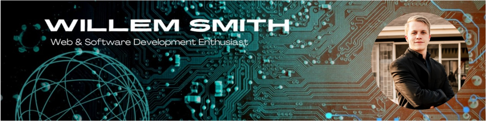

I am a full-stack software developer with a BSc in Information Technology from North-West University. I am currently a Full-Stack Developer at Thoughtware (Pty) Ltd, where I independently own major feature areas of a production point-of-sale platform end-to-end — React Native frontend, FastAPI backend, and MSSQL data layer — with a focus on real-time systems, API design, and reliability engineering.
I architected and led development of a POS ecosystem from scratch: the core POS application plus companion apps for customer display, manager reporting, and back-office administration, all sharing one FastAPI/MSSQL backend. Alongside product work, I designed an AI context infrastructure that gives developers and AI agents structured, source-verifiable knowledge about a large multi-service codebase.
I care about software that is technically sound and intuitively designed, and I am drawn to real-time systems, clean architecture, and automation. My goal is to keep expanding my technical depth while building solutions that help shape South Africa's evolving tech landscape.
Full-Stack Developer
Architected and built a point-of-sale ecosystem from scratch — the core POS app and four companion apps — over roughly 4.5 months.
Johannesburg, South Africa
React Native · React · TypeScript · Vite · Python · FastAPI · SQLAlchemy · MSSQL · WebSockets · JWT · AsyncStorage · ESC/POS
Designed and led development of the core POS app and four companion apps: Customer Display System, Manager Dashboard, and Back Office built from scratch, and the Kitchen Display System extended with new capabilities.
Junior Developer (Part-Time)
Contributed to the ongoing development of a multi-tenant Electronic Dealer Portal built on a Frappe-based ERPNext system, used by multiple automotive dealerships across South Africa.
Centurion, South Africa
Worked closely with senior engineers to enhance both backend and frontend functionality, using Python, JavaScript, and HTML to deliver stable, user-friendly solutions aligned with business workflows.
Data Capturer
Part of a team that migrated data from a legacy system to a new operational platform.
Midrand, South Africa
A production point-of-sale ecosystem I architected and built from scratch at Thoughtware over ~4.5 months: a core POS app plus companion apps that share one FastAPI/MSSQL backend.
React Native · React · TypeScript · Vite · Python · FastAPI · SQLAlchemy · MSSQL · WebSockets
Commercial project — source code is private.
A persistent AI context layer for a multi-repository SaaS ecosystem (8 applications, ~90 API routes) that gives developers and AI agents structured, source-verifiable knowledge to reason about dependencies, business logic, and change impact.
Claude AI · Agentic Workflows · Model Context Protocol (MCP) · Prompt Engineering
A full commercial website built for a South African plastics manufacturer, developed with Next.js and React:
A full-stack group project — a real-time messaging application with group and private channels.
Node.js · Socket.io · JavaScript
The live demo is hosted on a free tier and may take ~30 seconds to wake on first load.
A private, offline-first budgeting app for iOS and Android. Everything lives on the device by default; cloud backup is opt-in.
React Native · Expo (SDK 57) · TypeScript · Supabase · Reanimated · react-native-svg
A mobile app that analyses a recorded golf swing frame-by-frame and returns AI-generated coaching feedback plus a follow-up coach chat.
Expo React Native · FastAPI · SQLAlchemy · PostgreSQL · Anthropic API · ffmpeg · Next.js
Click any certificate to view it.
North-West University
2022 – 2025 · Potchefstroom
Three-year degree covering software development, databases, systems analysis & design, computer networks, and software project management.
Leeuwenhof Academy
2017 – 2021 · Independent Examinations Board (IEB)
IEB matric with a Bachelor's-degree pass (university exemption).
Breaks down complex systems methodically to reach clear, actionable insights.
Resourceful and solution-focused when tackling technical or business challenges.
Delivers clean, reliable work with consistent focus on accuracy.
Strong architectural analysis and a clear view of how components interact.
Quickly picks up new tools, frameworks, and technologies.
Works effectively with both technical and business stakeholders.
Reach out to me through the platforms below: